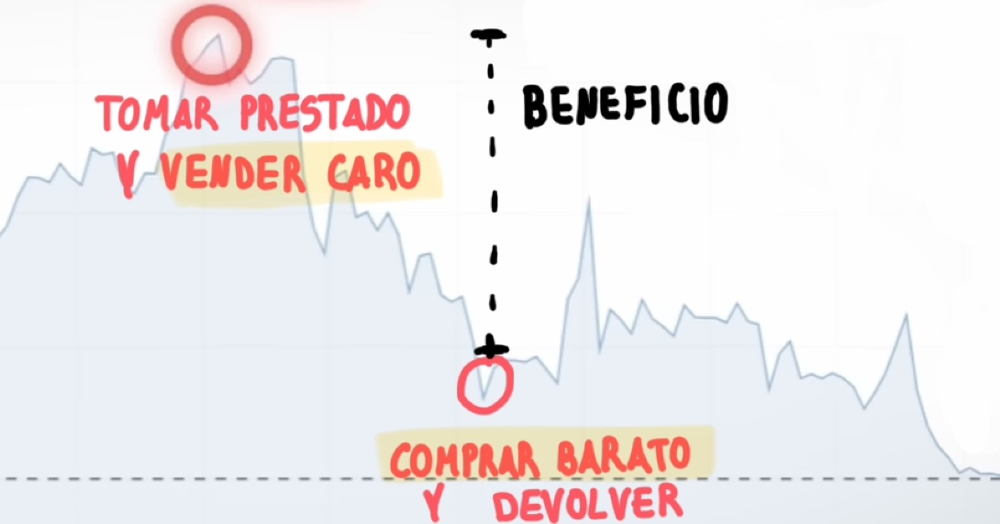

Atención, no tengo ni idea de economía! Gracias por leer.
En The Big Short, los personajes usan una manera de invertir dinero que consiste en beneficiarse si la economía va mal. Esto me pareció raro, y luego aprendí que hay empresas que ganan dinero cazando a negocios corruptos usando la misma estrategia, beneficiándose si las cosas se hunden.
Aquí voy a explicar lo que he entendido sobre cómo funciona esto.
Consiste en cazar corruptos apostando en corto.
Naide quiere estar al lado de corruptos
Una empresa corrupta es menos eficiente y vale menos. Aunque está la imagen de que la corrupción te hace rico, muchas veces no es así, especialmente si engañas a tus accionistas.
- Si el dueño roba, está robando a los inversores. Dinero que podría mejorar la empresa se pierde de forma egoísta.
- Si el dueño acepta sobornos, está asignando capital de manera ineficiente. Antepone su beneficio (el soborno) ante los beneficios que aportarían mejores clientes a la empresa, seleccionados limpiamente.
- Si el jefe miente sobre las ganancias, engaña a los inversores haciendo que no puedan tomar buenas decisiones.
- Si no se pagan impuestos se puede quebrar ante un juez.
- Cualquier decisión se vuelve más difícil cuando no hay transparencia.
- Además el talento escapa para no relacionarse con prácticas engañosas.
No es que la corrupción sea simplemente "mala", es que también hay incentivos económicos reales para que una organización esté limpia.
Manual del Cazarecompensas
Ya hemos visto que nadie quiere una empresa corrupta, entonces es normal que se formen agencias que destapan el fraude y se benefician.
Estas son empresas de "investigación financiera" o "short-selling research firms".
Esto funciona así.
- La agencia investiga las cuentas de un negocio sospechoso durante meses.
- En caso de que se descubra corrupción se escribe un informe.
- Se invierte en corto con las acciones del negocio corrupto.
- Se publica el informe y los inversores reaccionan ante el fraude, retirando su dinero.
- Si la empresa corrupta cae en bolsa, la agencia investigadora gana dinero.
Ahora, ¿Cómo se invierte en contra de una empresa?
Cómo funciona apostar en contra, short selling
El título de "The Big Short", viene de esto, short-selling.
Funciona así:
- Un broker te presta unas acciones.
- Tú vendes esas acciones al precio actual (precio alto, anterior al informe).
- -- Publicas el informe destapando la corrupción y el precio cae --
- Compras acciones al precio bajo y se las devuelves al broker.
Imagina que vendes 10 acciones que te han prestado y estaban a 10€, entonces ahora en tu cuenta del banco tienes 100€. Ahora la empresa cae y las acciones pasan de valer 10€ a valer 2€. Como el precio está bajo, compras 10 acciones por 20€ y se las devuelves al broker. Así has ganado 80€ apostando contra una empresa.
Hay que recordar que esto también tiene su riesgo, porque en caso de que vendas caro y las acciones suban, las tienes que devolver a un precio aún más caro, y gana dinero el broker.
También hay otras desventajas como tener que pagarle al broker los dividendos de las acciones en ese periodo, estar forzado a cerrar tu posición antes de que hayan caído... todo tiene su parte mala.
Incentivos muy bien alineados
Está fenomenal que se regule así. Los incentivos están perfectamente puestos para conseguir lo que queremos, empresas honestas.
El hecho de que puedas acusar y realmente ganar dinero si tienes razón me parece increíble, y también es una muestra del fracaso absoluto de agencias que se dedican a evaluar la calidad de las acciones, como pasó en 2008 en EE. UU. con las "credit rating agencies."
Si existen cazarrecompensas es que el sistema legal ha fallado.
En "The Big Short" usan seguros y derivados más complicados pero yo me conformo con entender esto básico, ya más adelante lo otro.
Relación con el liberalismo
Supongo que hay muchas más formas de autorregulación en el mercado libre, pero esto ya se lo dejo a Daniel. Estoy seguro de que él piensa que la autorregulación es la única forma correcta.
Yo no sé si es la única forma correcta de regular pero me parece la más bonita.
En The Big Short Ben Rickert (Brad Pitt) dice una frase: "For every 1% unemployment goes up, 40,000 people die". Si es verdad, muestra bien las consecuencias reales de los números en economía.
Dejo por aquí la página de mi amigo Daniel sobre economía.
Feliz año 2026!